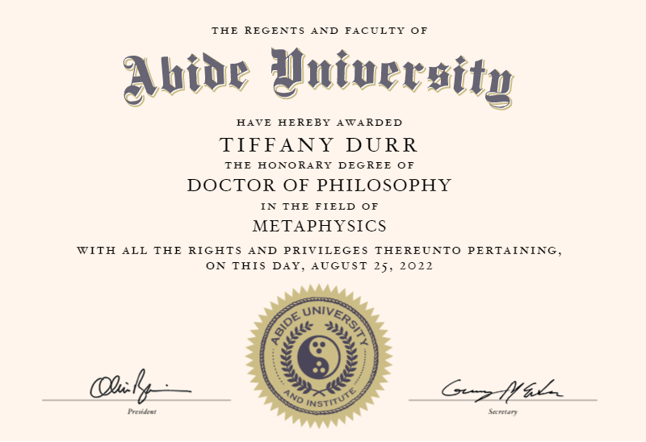

Notre vie en ligne.
Virtualité ou réalité ?
par le Docteur Tiffany Durr
Docteur en Phisolophie
Spécialisé en métaphysique
Tiffany Durr est diplômée de l’université de Abide
Elle a obtenu son doctorat en aout 2022.
